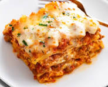

Lasagna

Description
Lasagna is a beloved Italian dish featuring layers of pasta, seasoned meat, tomato sauce, and a trio of cheeses—ricotta, mozzarella, and Parmesan. Baked to perfection, it delivers a savory and comforting culinary experience.
Ingredients
- Meat
- 1x Onion
- 2x Cloves of Garlic
- 2x Cans of crushed tomatos
- 2x Cans of tomato sauce
- 2x Cans of tomato paste
- 2x Tablespoons of sugar
- Parsley, salt, fennel seeds and black pepper for seasoning
- Cheeses
Lasagna Layering
- Meat sauce
- Noodles
- Ricotta mixture
- Mozzarella slices
- Meat sauce
- Parmesan cheese
- Repeat the layers, then top with the remaining Parmesan.
Step by step
- Make the meat sauce.
- Cook the noodles.
- Make the ricotta mixture.
- Layer the lasagna according to the recipe instructions.
- Cover with foil and bake.
- Let the lasagna rest before serving.